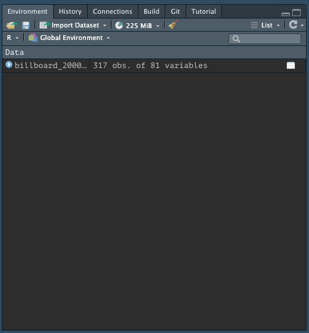
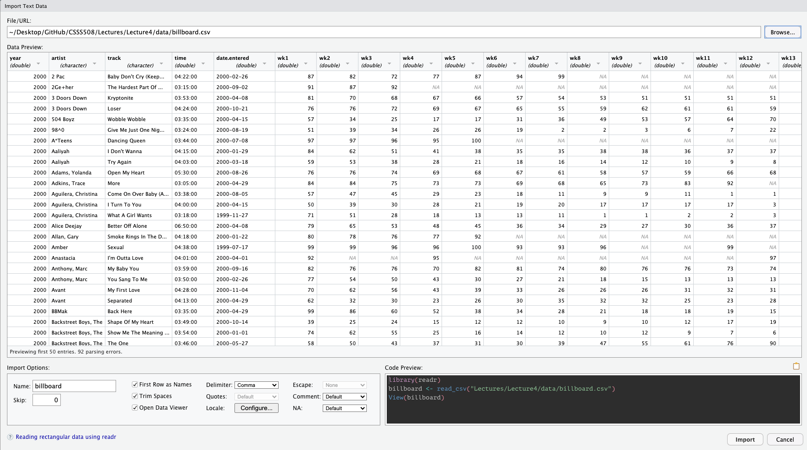
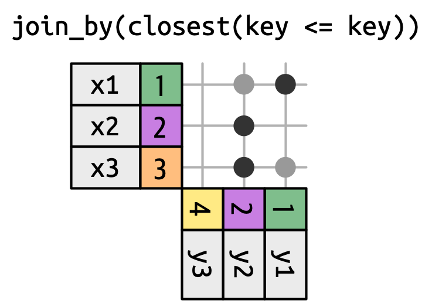
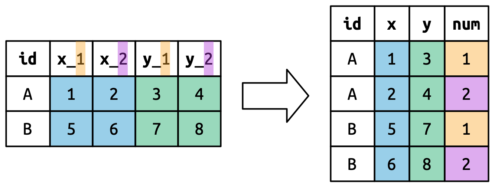

Data Wrangling in R
CSSCR Workshop
19 October 2023
Victoria Sass
Roadmap
- Importing and Exporting Data
- Manipulating and Summarizing Data
- Merging Data
- Tidying and Reshaping Data
Importing and Exporting Data
Data Packages
R has a big user base. If you are working with a popular data source, it will often have a devoted R package on CRAN or Github.
Examples:
-
WDI: World Development Indicators (World Bank) -
tidycensus: Census and American Community Survey -
quantmod: financial data from Yahoo, FRED, Google -
gssr: The General Social Survey Cumulative Data (1972-2021) -
psidR: Panel Study of Income Dynamics (basic & public datasets)
If you have an actual data file, you’ll have to import it yourself…
Delimited Text Files
Besides a package, it’s easiest when data is stored in a text file. The most commonly encountered delimitd file is a .csv.
A comma-separated values (.csv) file looks like the following:
"Subject","Depression","Sex","Week","HamD","Imipramine"
101,"Non-endogenous","Second",0,26,NA
101,"Non-endogenous","Second",1,22,NA
101,"Non-endogenous","Second",2,18,4.04305
101,"Non-endogenous","Second",3,7,3.93183
101,"Non-endogenous","Second",4,4,4.33073
101,"Non-endogenous","Second",5,3,4.36945
103,"Non-endogenous","First",0,33,NA
103,"Non-endogenous","First",1,24,NA
103,"Non-endogenous","First",2,15,2.77259readr
R has some built-in functions for importing data, such as read.table() and read.csv().
The readr package provides similar functions, like read_csv(), that have slightly better features:
- Faster!
- Better defaults (e.g. doesn’t automatically convert characters to factors)
- A bit smarter about dates and times
- Loading progress bars for large files
readr is one of the core tidyverse packages so loading tidyverse will load it too:
readr Importing Example
Let’s import some data about song ranks on the Billboard Hot 100 in 2000:
How do we know it loaded?
Let’s look at it!
Rows: 317
Columns: 81
$ year <dbl> 2000, 2000, 2000, 2000, 2000, 2000, 2000, 2000, 2000, 200…
$ artist <chr> "2 Pac", "2Ge+her", "3 Doors Down", "3 Doors Down", "504 …
$ track <chr> "Baby Don't Cry (Keep...", "The Hardest Part Of ...", "Kr…
$ time <time> 04:22:00, 03:15:00, 03:53:00, 04:24:00, 03:35:00, 03:24:…
$ date.entered <date> 2000-02-26, 2000-09-02, 2000-04-08, 2000-10-21, 2000-04-…
$ wk1 <dbl> 87, 91, 81, 76, 57, 51, 97, 84, 59, 76, 84, 57, 50, 71, 7…
$ wk2 <dbl> 82, 87, 70, 76, 34, 39, 97, 62, 53, 76, 84, 47, 39, 51, 6…
$ wk3 <dbl> 72, 92, 68, 72, 25, 34, 96, 51, 38, 74, 75, 45, 30, 28, 5…
$ wk4 <dbl> 77, NA, 67, 69, 17, 26, 95, 41, 28, 69, 73, 29, 28, 18, 4…
$ wk5 <dbl> 87, NA, 66, 67, 17, 26, 100, 38, 21, 68, 73, 23, 21, 13, …
$ wk6 <dbl> 94, NA, 57, 65, 31, 19, NA, 35, 18, 67, 69, 18, 19, 13, 3…
$ wk7 <dbl> 99, NA, 54, 55, 36, 2, NA, 35, 16, 61, 68, 11, 20, 11, 34…
$ wk8 <dbl> NA, NA, 53, 59, 49, 2, NA, 38, 14, 58, 65, 9, 17, 1, 29, …
$ wk9 <dbl> NA, NA, 51, 62, 53, 3, NA, 38, 12, 57, 73, 9, 17, 1, 27, …
$ wk10 <dbl> NA, NA, 51, 61, 57, 6, NA, 36, 10, 59, 83, 11, 17, 2, 30,…
$ wk11 <dbl> NA, NA, 51, 61, 64, 7, NA, 37, 9, 66, 92, 1, 17, 2, 36, N…
$ wk12 <dbl> NA, NA, 51, 59, 70, 22, NA, 37, 8, 68, NA, 1, 3, 3, 37, N…
$ wk13 <dbl> NA, NA, 47, 61, 75, 29, NA, 38, 6, 61, NA, 1, 3, 3, 39, N…
$ wk14 <dbl> NA, NA, 44, 66, 76, 36, NA, 49, 1, 67, NA, 1, 7, 4, 49, N…
$ wk15 <dbl> NA, NA, 38, 72, 78, 47, NA, 61, 2, 59, NA, 4, 10, 12, 57,…
$ wk16 <dbl> NA, NA, 28, 76, 85, 67, NA, 63, 2, 63, NA, 8, 17, 11, 63,…
$ wk17 <dbl> NA, NA, 22, 75, 92, 66, NA, 62, 2, 67, NA, 12, 25, 13, 65…
$ wk18 <dbl> NA, NA, 18, 67, 96, 84, NA, 67, 2, 71, NA, 22, 29, 15, 68…
$ wk19 <dbl> NA, NA, 18, 73, NA, 93, NA, 83, 3, 79, NA, 23, 29, 18, 79…
$ wk20 <dbl> NA, NA, 14, 70, NA, 94, NA, 86, 4, 89, NA, 43, 40, 20, 86…
$ wk21 <dbl> NA, NA, 12, NA, NA, NA, NA, NA, 5, NA, NA, 44, 43, 30, NA…
$ wk22 <dbl> NA, NA, 7, NA, NA, NA, NA, NA, 5, NA, NA, NA, 50, 40, NA,…
$ wk23 <dbl> NA, NA, 6, NA, NA, NA, NA, NA, 6, NA, NA, NA, NA, 39, NA,…
$ wk24 <dbl> NA, NA, 6, NA, NA, NA, NA, NA, 9, NA, NA, NA, NA, 44, NA,…
$ wk25 <dbl> NA, NA, 6, NA, NA, NA, NA, NA, 13, NA, NA, NA, NA, NA, NA…
$ wk26 <dbl> NA, NA, 5, NA, NA, NA, NA, NA, 14, NA, NA, NA, NA, NA, NA…
$ wk27 <dbl> NA, NA, 5, NA, NA, NA, NA, NA, 16, NA, NA, NA, NA, NA, NA…
$ wk28 <dbl> NA, NA, 4, NA, NA, NA, NA, NA, 23, NA, NA, NA, NA, NA, NA…
$ wk29 <dbl> NA, NA, 4, NA, NA, NA, NA, NA, 22, NA, NA, NA, NA, NA, NA…
$ wk30 <dbl> NA, NA, 4, NA, NA, NA, NA, NA, 33, NA, NA, NA, NA, NA, NA…
$ wk31 <dbl> NA, NA, 4, NA, NA, NA, NA, NA, 36, NA, NA, NA, NA, NA, NA…
$ wk32 <dbl> NA, NA, 3, NA, NA, NA, NA, NA, 43, NA, NA, NA, NA, NA, NA…
$ wk33 <dbl> NA, NA, 3, NA, NA, NA, NA, NA, NA, NA, NA, NA, NA, NA, NA…
$ wk34 <dbl> NA, NA, 3, NA, NA, NA, NA, NA, NA, NA, NA, NA, NA, NA, NA…
$ wk35 <dbl> NA, NA, 4, NA, NA, NA, NA, NA, NA, NA, NA, NA, NA, NA, NA…
$ wk36 <dbl> NA, NA, 5, NA, NA, NA, NA, NA, NA, NA, NA, NA, NA, NA, NA…
$ wk37 <dbl> NA, NA, 5, NA, NA, NA, NA, NA, NA, NA, NA, NA, NA, NA, NA…
$ wk38 <dbl> NA, NA, 9, NA, NA, NA, NA, NA, NA, NA, NA, NA, NA, NA, NA…
$ wk39 <dbl> NA, NA, 9, NA, NA, NA, NA, NA, NA, NA, NA, NA, NA, NA, NA…
$ wk40 <dbl> NA, NA, 15, NA, NA, NA, NA, NA, NA, NA, NA, NA, NA, NA, N…
$ wk41 <dbl> NA, NA, 14, NA, NA, NA, NA, NA, NA, NA, NA, NA, NA, NA, N…
$ wk42 <dbl> NA, NA, 13, NA, NA, NA, NA, NA, NA, NA, NA, NA, NA, NA, N…
$ wk43 <dbl> NA, NA, 14, NA, NA, NA, NA, NA, NA, NA, NA, NA, NA, NA, N…
$ wk44 <dbl> NA, NA, 16, NA, NA, NA, NA, NA, NA, NA, NA, NA, NA, NA, N…
$ wk45 <dbl> NA, NA, 17, NA, NA, NA, NA, NA, NA, NA, NA, NA, NA, NA, N…
$ wk46 <dbl> NA, NA, 21, NA, NA, NA, NA, NA, NA, NA, NA, NA, NA, NA, N…
$ wk47 <dbl> NA, NA, 22, NA, NA, NA, NA, NA, NA, NA, NA, NA, NA, NA, N…
$ wk48 <dbl> NA, NA, 24, NA, NA, NA, NA, NA, NA, NA, NA, NA, NA, NA, N…
$ wk49 <dbl> NA, NA, 28, NA, NA, NA, NA, NA, NA, NA, NA, NA, NA, NA, N…
$ wk50 <dbl> NA, NA, 33, NA, NA, NA, NA, NA, NA, NA, NA, NA, NA, NA, N…
$ wk51 <dbl> NA, NA, 42, NA, NA, NA, NA, NA, NA, NA, NA, NA, NA, NA, N…
$ wk52 <dbl> NA, NA, 42, NA, NA, NA, NA, NA, NA, NA, NA, NA, NA, NA, N…
$ wk53 <dbl> NA, NA, 49, NA, NA, NA, NA, NA, NA, NA, NA, NA, NA, NA, N…
$ wk54 <dbl> NA, NA, NA, NA, NA, NA, NA, NA, NA, NA, NA, NA, NA, NA, N…
$ wk55 <dbl> NA, NA, NA, NA, NA, NA, NA, NA, NA, NA, NA, NA, NA, NA, N…
$ wk56 <dbl> NA, NA, NA, NA, NA, NA, NA, NA, NA, NA, NA, NA, NA, NA, N…
$ wk57 <dbl> NA, NA, NA, NA, NA, NA, NA, NA, NA, NA, NA, NA, NA, NA, N…
$ wk58 <dbl> NA, NA, NA, NA, NA, NA, NA, NA, NA, NA, NA, NA, NA, NA, N…
$ wk59 <dbl> NA, NA, NA, NA, NA, NA, NA, NA, NA, NA, NA, NA, NA, NA, N…
$ wk60 <dbl> NA, NA, NA, NA, NA, NA, NA, NA, NA, NA, NA, NA, NA, NA, N…
$ wk61 <dbl> NA, NA, NA, NA, NA, NA, NA, NA, NA, NA, NA, NA, NA, NA, N…
$ wk62 <dbl> NA, NA, NA, NA, NA, NA, NA, NA, NA, NA, NA, NA, NA, NA, N…
$ wk63 <dbl> NA, NA, NA, NA, NA, NA, NA, NA, NA, NA, NA, NA, NA, NA, N…
$ wk64 <dbl> NA, NA, NA, NA, NA, NA, NA, NA, NA, NA, NA, NA, NA, NA, N…
$ wk65 <dbl> NA, NA, NA, NA, NA, NA, NA, NA, NA, NA, NA, NA, NA, NA, N…
$ wk66 <lgl> NA, NA, NA, NA, NA, NA, NA, NA, NA, NA, NA, NA, NA, NA, N…
$ wk67 <lgl> NA, NA, NA, NA, NA, NA, NA, NA, NA, NA, NA, NA, NA, NA, N…
$ wk68 <lgl> NA, NA, NA, NA, NA, NA, NA, NA, NA, NA, NA, NA, NA, NA, N…
$ wk69 <lgl> NA, NA, NA, NA, NA, NA, NA, NA, NA, NA, NA, NA, NA, NA, N…
$ wk70 <lgl> NA, NA, NA, NA, NA, NA, NA, NA, NA, NA, NA, NA, NA, NA, N…
$ wk71 <lgl> NA, NA, NA, NA, NA, NA, NA, NA, NA, NA, NA, NA, NA, NA, N…
$ wk72 <lgl> NA, NA, NA, NA, NA, NA, NA, NA, NA, NA, NA, NA, NA, NA, N…
$ wk73 <lgl> NA, NA, NA, NA, NA, NA, NA, NA, NA, NA, NA, NA, NA, NA, N…
$ wk74 <lgl> NA, NA, NA, NA, NA, NA, NA, NA, NA, NA, NA, NA, NA, NA, N…
$ wk75 <lgl> NA, NA, NA, NA, NA, NA, NA, NA, NA, NA, NA, NA, NA, NA, N…
$ wk76 <lgl> NA, NA, NA, NA, NA, NA, NA, NA, NA, NA, NA, NA, NA, NA, N…Alternate Solution
When you import data from an external file you’ll also see it in the Global Environment tab in the upper-right pane of RStudio:
You can also import the data manually!
In the upper right-hand pane of RStudio (make sure you’re in the Environment tab), select:
Import Dataset > From Text (readr) and browse to the file on your computer1.
Once you’ve imported the data, you can copy/paste the import code from the console into your file!!
This makes the process reproducible!

Manual Data Import
Specifying NAs
Sometimes a particular dataset or file read from a different software will code NAs differently than R. If that’s the case, you can add additional specifications to read_csv for what to read in as NA.
Skipping lines
Depending on how the data were input, there may be several lines that precede the beginning of the data table you’re interested in importing. You can skip these lines of metadata with the skip argument:
Variable names
read_csv will automatically take the first row as column names. If you want to rename them you can save yourself some time recoding later on if you specify your preferred variable names upfront with the col_names argument.
It takes a character vector to be used as column names (in their order of appearance).
Snake Case
If you simply want to change your variables to snake case (all lower case; words separated by _), you can use the function clean_names() from the janitor package which replaces other punctuation separators with _.
# Download pacakge first
# install.packages("janitor")
# Create new object for renamed data
billboard_renamed <- billboard_2000_raw |>
janitor::clean_names(numerals = "right")
billboard_renamed |> names() |> head(10)- 3
- Run in the console first.
- 4
-
You can call a function without loading its package by specifying its package name followed by
::before it;
Thenumeralsargument specifies if you additionally want to put a separator before a number.
[1] "year" "artist" "track" "time" "date_entered"
[6] "wk_1" "wk_2" "wk_3" "wk_4" "wk_5" Other Data File Types with readr
The other functions in readr employ a similar approach to read_csv so the trick is just knowing which to use for what data type.
-
read_csv2is separated by semicolons (instead of commas) -
read_tsvis separated by tabs -
read_delimguesses the delimiter -
read_fwfreads in fixed-width-files -
read_tableis a variation offwfwhere columns are separated by white space -
read_logreads in Apache-style log files
Other Packages to Read in Data
There are a range of other ways, besides delimited files, that data are stored.
The following packages are part of the extended tidyverse and therefore operate with similar syntax and logic as readr.
Other Packages to Read in Data
There are a range of other ways, besides delimited files, that data are stored.
The following packages are part of the extended tidyverse and therefore operate with similar syntax and logic as readr.

- For Excel files (
.xlsor.xlsx), use packagereadxl1
Other Packages to Read in Data
There are a range of other ways, besides delimited files, that data are stored.
The following packages are part of the extended tidyverse and therefore operate with similar syntax and logic as readr.
- For Excel files (
.xlsor.xlsx), use packagereadxl1 - For Google Docs Spreadsheets, use package
googlesheets42
Other Packages to Read in Data
There are a range of other ways, besides delimited files, that data are stored.
The following packages are part of the extended tidyverse and therefore operate with similar syntax and logic as readr.

- For Excel files (
.xlsor.xlsx), use packagereadxl1 - For Google Docs Spreadsheets, use package
googlesheets42 - For Stata, SPSS, and SAS files, use package
haven3
How does readr parse different data types?
For each column in a data frame, readr functions pull the first 1000 rows and checks:
flowchart LR
id1((Variable))==>A(["1. Does it contain only F, T, FALSE, TRUE, or NA (ignoring case)?"])==>id2{{Logical}}
id1((Variable))==>B(["2. Does it contain only numbers (e.g., 1, -4.5, 5e6, Inf?)"])==>id3{{Number}}
id1((Variable))==>C(["3. Does it match the ISO8601 standard?"])==>id4{{Date/Date-time}}
id1((Variable))==>D(["4. None of the above"])==>id5{{String}}
style id1 fill:#4B2E83,color:#B7A57A,stroke:#B7A57A
style id2 fill:#B7A57A,color:#4B2E83,stroke:#4B2E83
style id3 fill:#B7A57A,color:#4B2E83,stroke:#4B2E83
style id4 fill:#B7A57A,color:#4B2E83,stroke:#4B2E83
style id5 fill:#B7A57A,color:#4B2E83,stroke:#4B2E83
style A fill:#FFFFFF,color:#000000,stroke:#000000
style B fill:#FFFFFF,color:#000000,stroke:#000000
style C fill:#FFFFFF,color:#000000,stroke:#000000
style D fill:#FFFFFF,color:#000000,stroke:#000000
How does readr parse different data types?
For each column in a data frame, readr functions pull the first 1000 rows and checks:
flowchart LR
id1((Variable))==>A(["1. Does it contain only F, T, FALSE, TRUE, or NA (ignoring case)?"])==>id2{{Logical}}
id1((Variable))==>B(["2. Does it contain only numbers (e.g., 1, -4.5, 5e6, Inf?)"])==>id3{{Number}}
id1((Variable))==>C(["3. Does it match the ISO8601 standard?"])==>id4{{Date/Date-time}}
id1((Variable))==>D(["4. None of the above"])==>id5{{String}}
style id1 fill:#4B2E83,color:#B7A57A,stroke:#B7A57A
style id2 fill:#4B2E83,color:#B7A57A,stroke:#B7A57A
style id3 fill:#B7A57A,color:#4B2E83,stroke:#4B2E83
style id4 fill:#B7A57A,color:#4B2E83,stroke:#4B2E83
style id5 fill:#B7A57A,color:#4B2E83,stroke:#4B2E83
style A fill:#B7A57A,color:#000000,stroke:#000000
style B fill:#FFFFFF,color:#000000,stroke:#000000
style C fill:#FFFFFF,color:#000000,stroke:#000000
style D fill:#FFFFFF,color:#000000,stroke:#000000
How does readr parse different data types?
For each column in a data frame, readr functions pull the first 1000 rows and checks:
flowchart LR
id1((Variable))==>A(["1. Does it contain only F, T, FALSE, TRUE, or NA (ignoring case)?"])==>id2{{Logical}}
id1((Variable))==>B(["2. Does it contain only numbers (e.g., 1, -4.5, 5e6, Inf?)"])==>id3{{Number}}
id1((Variable))==>C(["3. Does it match the ISO8601 standard?"])==>id4{{Date/Date-time}}
id1((Variable))==>D(["4. None of the above"])==>id5{{String}}
style id1 fill:#4B2E83,color:#B7A57A,stroke:#B7A57A
style id2 fill:#B7A57A,color:#4B2E83,stroke:#4B2E83
style id3 fill:#4B2E83,color:#B7A57A,stroke:#B7A57A
style id4 fill:#B7A57A,color:#4B2E83,stroke:#4B2E83
style id5 fill:#B7A57A,color:#4B2E83,stroke:#4B2E83
style A fill:#FFFFFF,color:#000000,stroke:#000000
style B fill:#B7A57A,color:#000000,stroke:#000000
style C fill:#FFFFFF,color:#000000,stroke:#000000
style D fill:#FFFFFF,color:#000000,stroke:#000000
How does readr parse different data types?
For each column in a data frame, readr functions pull the first 1000 rows and checks:
flowchart LR
id1((Variable))==>A(["1. Does it contain only F, T, FALSE, TRUE, or NA (ignoring case)?"])==>id2{{Logical}}
id1((Variable))==>B(["2. Does it contain only numbers (e.g., 1, -4.5, 5e6, Inf?)"])==>id3{{Number}}
id1((Variable))==>C(["3. Does it match the ISO8601 standard?"])==>id4{{Date/Date-time}}
id1((Variable))==>D(["4. None of the above"])==>id5{{String}}
style id1 fill:#4B2E83,color:#B7A57A,stroke:#B7A57A
style id2 fill:#B7A57A,color:#4B2E83,stroke:#4B2E83
style id3 fill:#B7A57A,color:#4B2E83,stroke:#4B2E83
style id4 fill:#4B2E83,color:#B7A57A,stroke:#B7A57A
style id5 fill:#B7A57A,color:#4B2E83,stroke:#4B2E83
style A fill:#FFFFFF,color:#000000,stroke:#000000
style B fill:#FFFFFF,color:#000000,stroke:#000000
style C fill:#B7A57A,color:#000000,stroke:#000000
style D fill:#FFFFFF,color:#000000,stroke:#000000
How does readr parse different data types?
For each column in a data frame, readr functions pull the first 1000 rows and checks:
flowchart LR
id1((Variable))==>A(["1. Does it contain only F, T, FALSE, TRUE, or NA (ignoring case)?"])==>id2{{Logical}}
id1((Variable))==>B(["2. Does it contain only numbers (e.g., 1, -4.5, 5e6, Inf?)"])==>id3{{Number}}
id1((Variable))==>C(["3. Does it match the ISO8601 standard?"])==>id4{{Date/Date-time}}
id1((Variable))==>D(["4. None of the above"])==>id5{{String}}
style id1 fill:#4B2E83,color:#B7A57A,stroke:#B7A57A
style id2 fill:#B7A57A,color:#4B2E83,stroke:#4B2E83
style id3 fill:#B7A57A,color:#4B2E83,stroke:#4B2E83
style id4 fill:#B7A57A,color:#4B2E83,stroke:#4B2E83
style id5 fill:#4B2E83,color:#B7A57A,stroke:#B7A57A
style A fill:#FFFFFF,color:#000000,stroke:#000000
style B fill:#FFFFFF,color:#000000,stroke:#000000
style C fill:#FFFFFF,color:#000000,stroke:#000000
style D fill:#B7A57A,color:#000000,stroke:#000000
Most Common Issue with Reading in Data
The most common problem that occurs when reading in data is having mixed data. Most often, given the heuristic provided in the last slide, will parse a variable as a character string to preserve whatever it contains.
Let’s actually look at how the billboard data was read in:
Rows: 317
Columns: 81
$ year <dbl> 2000, 2000, 2000, 2000, 2000, 2000, 2000, 2000, 2000, 200…
$ artist <chr> "2 Pac", "2Ge+her", "3 Doors Down", "3 Doors Down", "504 …
$ track <chr> "Baby Don't Cry (Keep...", "The Hardest Part Of ...", "Kr…
$ time <time> 04:22:00, 03:15:00, 03:53:00, 04:24:00, 03:35:00, 03:24:…
$ date.entered <date> 2000-02-26, 2000-09-02, 2000-04-08, 2000-10-21, 2000-04-…
$ wk1 <dbl> 87, 91, 81, 76, 57, 51, 97, 84, 59, 76, 84, 57, 50, 71, 7…
$ wk2 <dbl> 82, 87, 70, 76, 34, 39, 97, 62, 53, 76, 84, 47, 39, 51, 6…
$ wk3 <dbl> 72, 92, 68, 72, 25, 34, 96, 51, 38, 74, 75, 45, 30, 28, 5…
$ wk4 <dbl> 77, NA, 67, 69, 17, 26, 95, 41, 28, 69, 73, 29, 28, 18, 4…
$ wk5 <dbl> 87, NA, 66, 67, 17, 26, 100, 38, 21, 68, 73, 23, 21, 13, …
$ wk6 <dbl> 94, NA, 57, 65, 31, 19, NA, 35, 18, 67, 69, 18, 19, 13, 3…
$ wk7 <dbl> 99, NA, 54, 55, 36, 2, NA, 35, 16, 61, 68, 11, 20, 11, 34…
$ wk8 <dbl> NA, NA, 53, 59, 49, 2, NA, 38, 14, 58, 65, 9, 17, 1, 29, …
$ wk9 <dbl> NA, NA, 51, 62, 53, 3, NA, 38, 12, 57, 73, 9, 17, 1, 27, …
$ wk10 <dbl> NA, NA, 51, 61, 57, 6, NA, 36, 10, 59, 83, 11, 17, 2, 30,…
$ wk11 <dbl> NA, NA, 51, 61, 64, 7, NA, 37, 9, 66, 92, 1, 17, 2, 36, N…
$ wk12 <dbl> NA, NA, 51, 59, 70, 22, NA, 37, 8, 68, NA, 1, 3, 3, 37, N…
$ wk13 <dbl> NA, NA, 47, 61, 75, 29, NA, 38, 6, 61, NA, 1, 3, 3, 39, N…
$ wk14 <dbl> NA, NA, 44, 66, 76, 36, NA, 49, 1, 67, NA, 1, 7, 4, 49, N…
$ wk15 <dbl> NA, NA, 38, 72, 78, 47, NA, 61, 2, 59, NA, 4, 10, 12, 57,…
$ wk16 <dbl> NA, NA, 28, 76, 85, 67, NA, 63, 2, 63, NA, 8, 17, 11, 63,…
$ wk17 <dbl> NA, NA, 22, 75, 92, 66, NA, 62, 2, 67, NA, 12, 25, 13, 65…
$ wk18 <dbl> NA, NA, 18, 67, 96, 84, NA, 67, 2, 71, NA, 22, 29, 15, 68…
$ wk19 <dbl> NA, NA, 18, 73, NA, 93, NA, 83, 3, 79, NA, 23, 29, 18, 79…
$ wk20 <dbl> NA, NA, 14, 70, NA, 94, NA, 86, 4, 89, NA, 43, 40, 20, 86…
$ wk21 <dbl> NA, NA, 12, NA, NA, NA, NA, NA, 5, NA, NA, 44, 43, 30, NA…
$ wk22 <dbl> NA, NA, 7, NA, NA, NA, NA, NA, 5, NA, NA, NA, 50, 40, NA,…
$ wk23 <dbl> NA, NA, 6, NA, NA, NA, NA, NA, 6, NA, NA, NA, NA, 39, NA,…
$ wk24 <dbl> NA, NA, 6, NA, NA, NA, NA, NA, 9, NA, NA, NA, NA, 44, NA,…
$ wk25 <dbl> NA, NA, 6, NA, NA, NA, NA, NA, 13, NA, NA, NA, NA, NA, NA…
$ wk26 <dbl> NA, NA, 5, NA, NA, NA, NA, NA, 14, NA, NA, NA, NA, NA, NA…
$ wk27 <dbl> NA, NA, 5, NA, NA, NA, NA, NA, 16, NA, NA, NA, NA, NA, NA…
$ wk28 <dbl> NA, NA, 4, NA, NA, NA, NA, NA, 23, NA, NA, NA, NA, NA, NA…
$ wk29 <dbl> NA, NA, 4, NA, NA, NA, NA, NA, 22, NA, NA, NA, NA, NA, NA…
$ wk30 <dbl> NA, NA, 4, NA, NA, NA, NA, NA, 33, NA, NA, NA, NA, NA, NA…
$ wk31 <dbl> NA, NA, 4, NA, NA, NA, NA, NA, 36, NA, NA, NA, NA, NA, NA…
$ wk32 <dbl> NA, NA, 3, NA, NA, NA, NA, NA, 43, NA, NA, NA, NA, NA, NA…
$ wk33 <dbl> NA, NA, 3, NA, NA, NA, NA, NA, NA, NA, NA, NA, NA, NA, NA…
$ wk34 <dbl> NA, NA, 3, NA, NA, NA, NA, NA, NA, NA, NA, NA, NA, NA, NA…
$ wk35 <dbl> NA, NA, 4, NA, NA, NA, NA, NA, NA, NA, NA, NA, NA, NA, NA…
$ wk36 <dbl> NA, NA, 5, NA, NA, NA, NA, NA, NA, NA, NA, NA, NA, NA, NA…
$ wk37 <dbl> NA, NA, 5, NA, NA, NA, NA, NA, NA, NA, NA, NA, NA, NA, NA…
$ wk38 <dbl> NA, NA, 9, NA, NA, NA, NA, NA, NA, NA, NA, NA, NA, NA, NA…
$ wk39 <dbl> NA, NA, 9, NA, NA, NA, NA, NA, NA, NA, NA, NA, NA, NA, NA…
$ wk40 <dbl> NA, NA, 15, NA, NA, NA, NA, NA, NA, NA, NA, NA, NA, NA, N…
$ wk41 <dbl> NA, NA, 14, NA, NA, NA, NA, NA, NA, NA, NA, NA, NA, NA, N…
$ wk42 <dbl> NA, NA, 13, NA, NA, NA, NA, NA, NA, NA, NA, NA, NA, NA, N…
$ wk43 <dbl> NA, NA, 14, NA, NA, NA, NA, NA, NA, NA, NA, NA, NA, NA, N…
$ wk44 <dbl> NA, NA, 16, NA, NA, NA, NA, NA, NA, NA, NA, NA, NA, NA, N…
$ wk45 <dbl> NA, NA, 17, NA, NA, NA, NA, NA, NA, NA, NA, NA, NA, NA, N…
$ wk46 <dbl> NA, NA, 21, NA, NA, NA, NA, NA, NA, NA, NA, NA, NA, NA, N…
$ wk47 <dbl> NA, NA, 22, NA, NA, NA, NA, NA, NA, NA, NA, NA, NA, NA, N…
$ wk48 <dbl> NA, NA, 24, NA, NA, NA, NA, NA, NA, NA, NA, NA, NA, NA, N…
$ wk49 <dbl> NA, NA, 28, NA, NA, NA, NA, NA, NA, NA, NA, NA, NA, NA, N…
$ wk50 <dbl> NA, NA, 33, NA, NA, NA, NA, NA, NA, NA, NA, NA, NA, NA, N…
$ wk51 <dbl> NA, NA, 42, NA, NA, NA, NA, NA, NA, NA, NA, NA, NA, NA, N…
$ wk52 <dbl> NA, NA, 42, NA, NA, NA, NA, NA, NA, NA, NA, NA, NA, NA, N…
$ wk53 <dbl> NA, NA, 49, NA, NA, NA, NA, NA, NA, NA, NA, NA, NA, NA, N…
$ wk54 <dbl> NA, NA, NA, NA, NA, NA, NA, NA, NA, NA, NA, NA, NA, NA, N…
$ wk55 <dbl> NA, NA, NA, NA, NA, NA, NA, NA, NA, NA, NA, NA, NA, NA, N…
$ wk56 <dbl> NA, NA, NA, NA, NA, NA, NA, NA, NA, NA, NA, NA, NA, NA, N…
$ wk57 <dbl> NA, NA, NA, NA, NA, NA, NA, NA, NA, NA, NA, NA, NA, NA, N…
$ wk58 <dbl> NA, NA, NA, NA, NA, NA, NA, NA, NA, NA, NA, NA, NA, NA, N…
$ wk59 <dbl> NA, NA, NA, NA, NA, NA, NA, NA, NA, NA, NA, NA, NA, NA, N…
$ wk60 <dbl> NA, NA, NA, NA, NA, NA, NA, NA, NA, NA, NA, NA, NA, NA, N…
$ wk61 <dbl> NA, NA, NA, NA, NA, NA, NA, NA, NA, NA, NA, NA, NA, NA, N…
$ wk62 <dbl> NA, NA, NA, NA, NA, NA, NA, NA, NA, NA, NA, NA, NA, NA, N…
$ wk63 <dbl> NA, NA, NA, NA, NA, NA, NA, NA, NA, NA, NA, NA, NA, NA, N…
$ wk64 <dbl> NA, NA, NA, NA, NA, NA, NA, NA, NA, NA, NA, NA, NA, NA, N…
$ wk65 <dbl> NA, NA, NA, NA, NA, NA, NA, NA, NA, NA, NA, NA, NA, NA, N…
$ wk66 <lgl> NA, NA, NA, NA, NA, NA, NA, NA, NA, NA, NA, NA, NA, NA, N…
$ wk67 <lgl> NA, NA, NA, NA, NA, NA, NA, NA, NA, NA, NA, NA, NA, NA, N…
$ wk68 <lgl> NA, NA, NA, NA, NA, NA, NA, NA, NA, NA, NA, NA, NA, NA, N…
$ wk69 <lgl> NA, NA, NA, NA, NA, NA, NA, NA, NA, NA, NA, NA, NA, NA, N…
$ wk70 <lgl> NA, NA, NA, NA, NA, NA, NA, NA, NA, NA, NA, NA, NA, NA, N…
$ wk71 <lgl> NA, NA, NA, NA, NA, NA, NA, NA, NA, NA, NA, NA, NA, NA, N…
$ wk72 <lgl> NA, NA, NA, NA, NA, NA, NA, NA, NA, NA, NA, NA, NA, NA, N…
$ wk73 <lgl> NA, NA, NA, NA, NA, NA, NA, NA, NA, NA, NA, NA, NA, NA, N…
$ wk74 <lgl> NA, NA, NA, NA, NA, NA, NA, NA, NA, NA, NA, NA, NA, NA, N…
$ wk75 <lgl> NA, NA, NA, NA, NA, NA, NA, NA, NA, NA, NA, NA, NA, NA, N…
$ wk76 <lgl> NA, NA, NA, NA, NA, NA, NA, NA, NA, NA, NA, NA, NA, NA, N…What Went Wrong?
Since readr uses the values in the first 1000 rows to guess the type of the column (logical, numeric, date/date-time, character), if the first 1000 rows don’t have any data, they will be coded as logical variables.
There are not many songs in the data that charted for 60+ weeks—and none in the first 1000 that charted for 66+ weeks!
NA is logical?
class(c(T, F, NA, FALSE, TRUE))
class(c(1, NA, 17.5, 5.3, NA))
class(as.Date(c(NA, "2023-10-31", "1986-06-21", "1997-01-15"), tz = "America/Los_Angeles"))
class(c("apple", NA, "mango", "blackberry", "plum"))
class(c(NA, NA, NA, NA, NA))- 5
-
classreturns the data type of its first argument. - 6
-
as.Dateturns a character string of dates into an official date class in BaseR. If we had an accompanying time stamp we would need to useas.POSIXctwhich turns a character string of dates and times into an official date-time class in BaseR.
[1] "logical"
[1] "numeric"
[1] "Date"
[1] "character"
[1] "logical"Column types
Since the wk* variables should all be read in as integers, we can specify this explicitly with the col_types argument.
# Create character string of shortcode column types
bb_types <- paste(c("icctD", rep("i", 76)), collapse="")
bb_types - 7
-
You can short-code column types with
i= integer,c= character,t= time,D= date.
Thecollapseargument collapses the first two arguments into one complete character string.
[1] "icctDiiiiiiiiiiiiiiiiiiiiiiiiiiiiiiiiiiiiiiiiiiiiiiiiiiiiiiiiiiiiiiiiiiiiiiiiiiii"# re-read in data with column types specified
billboard_2000_raw <- read_csv(file = "data/billboard.csv",
col_types = bb_types)- 8
- See all column types and short codes here.
Column types
To specify a default column type you can use .default like so:
Another useful helper is cols_only() for when you only want to read in a subset of all available variables.
In summary, the col-types argument gives you greater control over how your data are read in and can save you recoding time down the road and/or point out where your data are behaving differently than you expect.
Writing Delimited Files
Getting data out of R into a delimited file is very similar to getting it into R:
This saved the data we pulled off the web in a file called billboard_data.csv in the data folder of my working directory.
However, saving data in this way will not preserve R data types since delimited files code everything as a character string.
To save R objects and all associated metadata you have two options:
- Used for single objects, doesn’t save original the object name
- Save:
write_rds(old_object_name, "path.Rds") - Load:
new_object_name <- read_rds("path.Rds")
- Used for saving multiple files where the original object names are preserved
- Save:
save(object1, object2, ... , file = "path.Rdata") - Load:
load("path.Rdata")without assignment operator
Writing Other File-Types
-
write_xlsx()writes to an xlsx file

-
sheet_write()orwrite_sheet()(over)writes new data into a Sheet -
gs4_create()creates a new Sheet -
sheet_append()appends rows to a sheet -
range_write()(over)writes new data into a range -
range_flood()floods a range of cells - `
range_clear()clears a range of cells
-
write_dta()writes Stata DTA files -
write_sav()writes SPSS files -
write_xpt()writes SAS transport files
Manipulating and Summarizing Data
Death to Spreadsheets
Tools like Excel or Google Sheets let you manipulate spreadsheets using functions.
- Spreadsheets are not reproducible: It’s hard to know how someone changed the raw data!
- It’s hard to catch mistakes when you use spreadsheets1.
We want to know how to use R to manipulate data more transparently and reproducibly.
Logical Operators
Data types in R
There are a variety of data types in R:
- Factors
- Date/Date-time
- Logical
- Numeric
- Missing Values
- Strings
Data types in R
There are a variety of data types in R:
- Factors
- Date/Date-time
- Logical
- Numeric
- Missing Values
- Strings
Logical Operators in R
Comparing objects
-
==: -
!=: -
>,>=,<,<=: -
%in%:
- is equal to1
- not equal to
- less than, less than or equal to, etc.
- used when checking if equal to one of several values
Combining comparisons
-
&: -
|: -
!: -
xor():
-
both conditions need to hold (AND)
-
at least one condition needs to hold (OR)
-
inverts a logical condition (
TRUEbecomesFALSE, vice versa)
- exclusive OR (i.e. x or y but NOT both)
Logical Summaries
- the equivalent of
|; it’ll returnTRUEif there are anyTRUE’s in x - the equivalent of
&; it’ll returnTRUEonly if all values of x areTRUE’s
C <- c(5, 10, NA, 10, 20, NA)
any(C <= 10)
all(C <= 20)
all(C <= 20, na.rm = TRUE)
mean(C, na.rm = TRUE)- 1
-
Like other summary functions, they’ll return
NAif there are any missing values present and it’sFALSE. - 2
-
Use
na.rm = TRUEto removeNAs prior to evaluation. - 3
-
When you evaluate a logical vector numerically,
TRUE= 1 andFALSE= 0. This makessum()andmean()useful when summarizing logical functions (sum gives number ofTRUEs and mean gives the proportion).
[1] TRUE
[1] NA
[1] TRUE
[1] 11.25Conditional transformations
if_else()
If you want to use one value when a condition is TRUE and another value when it’s FALSE.
case_when()
A very useful extension of if_else() for multiple conditions1.
- 5
-
Use
.defaultif you want to create a “default”/catch all value. - 6
-
Both functions require compatible types: i.e. numerical and logical, strings and factors, dates and datetimes,
NAand everything.
[1] "-ve" "-ve" "-ve" "0" "+ve" "+ve" "+ve" "???"dplyr
Today, we’ll use tools from the dplyr package to manipulate data!
- Like
ggplot2,dplyris part of the Tidyverse, and included in thetidyversepackage.
To demonstrate data transformations we’re going to use the nycflights13 dataset, which you’ll need to download and load into R
nycflights13 includes five dataframes1, some of which contain missing data (NA):
dplyr Basics
All dplyr functions have the following in common:
- The first argument is always a data frame.
- The subsequent arguments typically describe which columns to operate on, using the variable names (without quotes).
- The output is always a new data frame.
Each function operates either on rows, columns, groups, or entire tables.
To save the transformations you’ve made to a data frame you’ll need to save the output to a new object.
Subsetting data
Subset Rows: filter()
We often get big datasets, and we only want some of the entries. We can subset rows using filter().
- 14
-
Here’s where we’ll use a lot of logical operators. Make sure to use
==not=to test the logical condition. - 15
-
Now,
delay_2hris an object in our environment which contains rows corresponding to flights that experienced at least a 2 hour delay.
# A tibble: 9,723 × 19
year month day dep_time sched_dep_time dep_delay arr_time sched_arr_time
<int> <int> <int> <int> <int> <dbl> <int> <int>
1 2013 1 1 848 1835 853 1001 1950
2 2013 1 1 957 733 144 1056 853
3 2013 1 1 1114 900 134 1447 1222
4 2013 1 1 1540 1338 122 2020 1825
5 2013 1 1 1815 1325 290 2120 1542
6 2013 1 1 1842 1422 260 1958 1535
7 2013 1 1 1856 1645 131 2212 2005
8 2013 1 1 1934 1725 129 2126 1855
9 2013 1 1 1938 1703 155 2109 1823
10 2013 1 1 1942 1705 157 2124 1830
# ℹ 9,713 more rows
# ℹ 11 more variables: arr_delay <dbl>, carrier <chr>, flight <int>,
# tailnum <chr>, origin <chr>, dest <chr>, air_time <dbl>, distance <dbl>,
# hour <dbl>, minute <dbl>, time_hour <dttm>Subset Columns: select()
What if we want to keep every observation, but only use certain variables? Use select()!
We can select columns by name:
- 16
-
You can use a
-before a variable name or a vector of variables to drop them from the data (i.e.select(-c(year, month, day))).
# A tibble: 336,776 × 3
year month day
<int> <int> <int>
1 2013 1 1
2 2013 1 1
3 2013 1 1
4 2013 1 1
5 2013 1 1
6 2013 1 1
7 2013 1 1
8 2013 1 1
9 2013 1 1
10 2013 1 1
# ℹ 336,766 more rowsSubset Columns: select()
What if we want to keep every observation, but only use certain variables? Use select()!
We can select columns between variables (inclusive):
Subset Columns: select()
What if we want to keep every observation, but only use certain variables? Use select()!
We can select columns based on a condition:
- 18
-
There are a number of helper functions you can use with
select()includingstarts_with(),ends_with(),contains()andnum_range(). Read more about these and more here.
# A tibble: 336,776 × 4
carrier tailnum origin dest
<chr> <chr> <chr> <chr>
1 UA N14228 EWR IAH
2 UA N24211 LGA IAH
3 AA N619AA JFK MIA
4 B6 N804JB JFK BQN
5 DL N668DN LGA ATL
6 UA N39463 EWR ORD
7 B6 N516JB EWR FLL
8 EV N829AS LGA IAD
9 B6 N593JB JFK MCO
10 AA N3ALAA LGA ORD
# ℹ 336,766 more rowsFinding Unique Rows: distinct()
You may want to find the unique combinations of variables in a dataset. Use distinct()
distinct() drops variables!
By default, distinct() drops unused variables. If you don’t want to drop them, add the argument .keep_all = TRUE:
- 20
-
It’s not a coincidence that all of these distinct flights are on January 1:
distinct()will find the first occurrence of a unique row in the dataset and discard the rest. Usecount()if you’re looking for the number of occurrences.
# A tibble: 224 × 19
year month day dep_time sched_dep_time dep_delay arr_time sched_arr_time
<int> <int> <int> <int> <int> <dbl> <int> <int>
1 2013 1 1 517 515 2 830 819
2 2013 1 1 533 529 4 850 830
3 2013 1 1 542 540 2 923 850
4 2013 1 1 544 545 -1 1004 1022
5 2013 1 1 554 600 -6 812 837
6 2013 1 1 554 558 -4 740 728
7 2013 1 1 555 600 -5 913 854
8 2013 1 1 557 600 -3 709 723
9 2013 1 1 557 600 -3 838 846
10 2013 1 1 558 600 -2 753 745
# ℹ 214 more rows
# ℹ 11 more variables: arr_delay <dbl>, carrier <chr>, flight <int>,
# tailnum <chr>, origin <chr>, dest <chr>, air_time <dbl>, distance <dbl>,
# hour <dbl>, minute <dbl>, time_hour <dttm>Count Unique Rows: count()
- 21
-
sort = TRUEarranges them in descending order of number of occurrences.
# A tibble: 224 × 3
origin dest n
<chr> <chr> <int>
1 JFK LAX 11262
2 LGA ATL 10263
3 LGA ORD 8857
4 JFK SFO 8204
5 LGA CLT 6168
6 EWR ORD 6100
7 JFK BOS 5898
8 LGA MIA 5781
9 JFK MCO 5464
10 EWR BOS 5327
# ℹ 214 more rowsModifying data
Sorting Data by Rows: arrange()
Sometimes it’s useful to sort rows in your data, in ascending (low to high) or descending (high to low) order. We do that with arrange().
- 22
- If you provide more than one column name, each additional column will be used to break ties in the values of preceding columns.
# A tibble: 336,776 × 19
year month day dep_time sched_dep_time dep_delay arr_time sched_arr_time
<int> <int> <int> <int> <int> <dbl> <int> <int>
1 2013 1 1 517 515 2 830 819
2 2013 1 1 533 529 4 850 830
3 2013 1 1 542 540 2 923 850
4 2013 1 1 544 545 -1 1004 1022
5 2013 1 1 554 600 -6 812 837
6 2013 1 1 554 558 -4 740 728
7 2013 1 1 555 600 -5 913 854
8 2013 1 1 557 600 -3 709 723
9 2013 1 1 557 600 -3 838 846
10 2013 1 1 558 600 -2 753 745
# ℹ 336,766 more rows
# ℹ 11 more variables: arr_delay <dbl>, carrier <chr>, flight <int>,
# tailnum <chr>, origin <chr>, dest <chr>, air_time <dbl>, distance <dbl>,
# hour <dbl>, minute <dbl>, time_hour <dttm>Sorting Data by Rows: arrange()
To sort in descending order, using desc() within arrange()
# A tibble: 336,776 × 19
year month day dep_time sched_dep_time dep_delay arr_time sched_arr_time
<int> <int> <int> <int> <int> <dbl> <int> <int>
1 2013 1 9 641 900 1301 1242 1530
2 2013 6 15 1432 1935 1137 1607 2120
3 2013 1 10 1121 1635 1126 1239 1810
4 2013 9 20 1139 1845 1014 1457 2210
5 2013 7 22 845 1600 1005 1044 1815
6 2013 4 10 1100 1900 960 1342 2211
7 2013 3 17 2321 810 911 135 1020
8 2013 6 27 959 1900 899 1236 2226
9 2013 7 22 2257 759 898 121 1026
10 2013 12 5 756 1700 896 1058 2020
# ℹ 336,766 more rows
# ℹ 11 more variables: arr_delay <dbl>, carrier <chr>, flight <int>,
# tailnum <chr>, origin <chr>, dest <chr>, air_time <dbl>, distance <dbl>,
# hour <dbl>, minute <dbl>, time_hour <dttm>Rename Variables: rename()
You may receive data with unintuitive variable names. Change them using rename().
- 23
-
rename(new_name = old_name)is the format. Reminder to usejanitor::clean_names()if you want to automate this process for a lot of variables.
# A tibble: 336,776 × 19
year month day dep_time sched_dep_time dep_delay arr_time sched_arr_time
<int> <int> <int> <int> <int> <dbl> <int> <int>
1 2013 1 1 517 515 2 830 819
2 2013 1 1 533 529 4 850 830
3 2013 1 1 542 540 2 923 850
4 2013 1 1 544 545 -1 1004 1022
5 2013 1 1 554 600 -6 812 837
6 2013 1 1 554 558 -4 740 728
7 2013 1 1 555 600 -5 913 854
8 2013 1 1 557 600 -3 709 723
9 2013 1 1 557 600 -3 838 846
10 2013 1 1 558 600 -2 753 745
# ℹ 336,766 more rows
# ℹ 11 more variables: arr_delay <dbl>, carrier <chr>, flight <int>,
# tail_num <chr>, origin <chr>, dest <chr>, air_time <dbl>, distance <dbl>,
# hour <dbl>, minute <dbl>, time_hour <dttm>Variable Syntax
I recommend against using spaces in a name! It makes things really hard sometimes!!
Create New Columns: mutate()
You can add new columns to a data frame using mutate().
- 24
-
By default,
mutate()adds new columns on the right hand side of your dataset, which makes it difficult to see if anything happened. You can use the.beforeargument to specify which numeric index (or variable name) to move the newly created variable to..afteris an alternative argument for this.
# A tibble: 336,776 × 21
gain speed year month day dep_time sched_dep_time dep_delay arr_time
<dbl> <dbl> <int> <int> <int> <int> <int> <dbl> <int>
1 -9 370. 2013 1 1 517 515 2 830
2 -16 374. 2013 1 1 533 529 4 850
3 -31 408. 2013 1 1 542 540 2 923
4 17 517. 2013 1 1 544 545 -1 1004
5 19 394. 2013 1 1 554 600 -6 812
6 -16 288. 2013 1 1 554 558 -4 740
7 -24 404. 2013 1 1 555 600 -5 913
8 11 259. 2013 1 1 557 600 -3 709
9 5 405. 2013 1 1 557 600 -3 838
10 -10 319. 2013 1 1 558 600 -2 753
# ℹ 336,766 more rows
# ℹ 12 more variables: sched_arr_time <int>, arr_delay <dbl>, carrier <chr>,
# flight <int>, tailnum <chr>, origin <chr>, dest <chr>, air_time <dbl>,
# distance <dbl>, hour <dbl>, minute <dbl>, time_hour <dttm>Specifying Variables to Keep: mutate()
You can specify which columns to keep with the .keep argument:
flights |>
mutate(
gain = dep_delay - arr_delay,
hours = air_time / 60,
gain_per_hour = gain / hours,
.keep = "used"
)- 25
- “used” retains only the variables used to create the new variables, which is useful for checking your work. Other options include: “all,” “unused,” and “none.”
# A tibble: 336,776 × 6
dep_delay arr_delay air_time gain hours gain_per_hour
<dbl> <dbl> <dbl> <dbl> <dbl> <dbl>
1 2 11 227 -9 3.78 -2.38
2 4 20 227 -16 3.78 -4.23
3 2 33 160 -31 2.67 -11.6
4 -1 -18 183 17 3.05 5.57
5 -6 -25 116 19 1.93 9.83
6 -4 12 150 -16 2.5 -6.4
7 -5 19 158 -24 2.63 -9.11
8 -3 -14 53 11 0.883 12.5
9 -3 -8 140 5 2.33 2.14
10 -2 8 138 -10 2.3 -4.35
# ℹ 336,766 more rowsMove Variables Around: relocate()
You might want to collect related variables together or move important variables to the front. Use relocate()!
- 26
-
By default
relocate()moves variables to the front but you can also specify where to put them using the.beforeand.afterarguments, just like inmutate().
# A tibble: 336,776 × 19
time_hour air_time year month day dep_time sched_dep_time
<dttm> <dbl> <int> <int> <int> <int> <int>
1 2013-01-01 05:00:00 227 2013 1 1 517 515
2 2013-01-01 05:00:00 227 2013 1 1 533 529
3 2013-01-01 05:00:00 160 2013 1 1 542 540
4 2013-01-01 05:00:00 183 2013 1 1 544 545
5 2013-01-01 06:00:00 116 2013 1 1 554 600
6 2013-01-01 05:00:00 150 2013 1 1 554 558
7 2013-01-01 06:00:00 158 2013 1 1 555 600
8 2013-01-01 06:00:00 53 2013 1 1 557 600
9 2013-01-01 06:00:00 140 2013 1 1 557 600
10 2013-01-01 06:00:00 138 2013 1 1 558 600
# ℹ 336,766 more rows
# ℹ 12 more variables: dep_delay <dbl>, arr_time <int>, sched_arr_time <int>,
# arr_delay <dbl>, carrier <chr>, flight <int>, tailnum <chr>, origin <chr>,
# dest <chr>, distance <dbl>, hour <dbl>, minute <dbl>Summarizing data
Grouping Data: group_by()
If you want to analyze your data by specific groupings, use group_by():
- 27
-
group_by()doesn’t change the data but you’ll notice that the output indicates that it is “grouped by” month(Groups: month [12]). This means subsequent operations will now work “by month”.
# A tibble: 336,776 × 19
# Groups: month [12]
year month day dep_time sched_dep_time dep_delay arr_time sched_arr_time
<int> <int> <int> <int> <int> <dbl> <int> <int>
1 2013 1 1 517 515 2 830 819
2 2013 1 1 533 529 4 850 830
3 2013 1 1 542 540 2 923 850
4 2013 1 1 544 545 -1 1004 1022
5 2013 1 1 554 600 -6 812 837
6 2013 1 1 554 558 -4 740 728
7 2013 1 1 555 600 -5 913 854
8 2013 1 1 557 600 -3 709 723
9 2013 1 1 557 600 -3 838 846
10 2013 1 1 558 600 -2 753 745
# ℹ 336,766 more rows
# ℹ 11 more variables: arr_delay <dbl>, carrier <chr>, flight <int>,
# tailnum <chr>, origin <chr>, dest <chr>, air_time <dbl>, distance <dbl>,
# hour <dbl>, minute <dbl>, time_hour <dttm>Summarizing Data: summarize()
summarize() calculates summaries of variables in your data:
- Count the number of rows
- Calculate the mean
- Calculate the sum
- Find the minimum or maximum value
summarize() Example
Let’s see what this looks like in our flights dataset:
summarize() Example
Let’s see what this looks like in our flights dataset:
Summarizing Data by Groups
What if we want to summarize data by our groups? Use group_by() and summarize()
Because we did group_by() with month, then used summarize(), we get one row per value of month!
Summarizing Data by Groups
You can create any number of summaries in a single call to summarize().
- 29
-
n()returns the number of rows in each group.
# A tibble: 12 × 3
month delay n
<int> <dbl> <int>
1 1 10.0 27004
2 2 10.8 24951
3 3 13.2 28834
4 4 13.9 28330
5 5 13.0 28796
6 6 20.8 28243
7 7 21.7 29425
8 8 12.6 29327
9 9 6.72 27574
10 10 6.24 28889
11 11 5.44 27268
12 12 16.6 28135Grouping by Multiple Variables
# A tibble: 336,776 × 19
# Groups: year, month, day [365]
year month day dep_time sched_dep_time dep_delay arr_time sched_arr_time
<int> <int> <int> <int> <int> <dbl> <int> <int>
1 2013 1 1 517 515 2 830 819
2 2013 1 1 533 529 4 850 830
3 2013 1 1 542 540 2 923 850
4 2013 1 1 544 545 -1 1004 1022
5 2013 1 1 554 600 -6 812 837
6 2013 1 1 554 558 -4 740 728
7 2013 1 1 555 600 -5 913 854
8 2013 1 1 557 600 -3 709 723
9 2013 1 1 557 600 -3 838 846
10 2013 1 1 558 600 -2 753 745
# ℹ 336,766 more rows
# ℹ 11 more variables: arr_delay <dbl>, carrier <chr>, flight <int>,
# tailnum <chr>, origin <chr>, dest <chr>, air_time <dbl>, distance <dbl>,
# hour <dbl>, minute <dbl>, time_hour <dttm>Summary & Grouping Behavior
When you summarize a tibble grouped by more than one variable, each summary peels off the last group. You can change the default behavior by setting the .groups argument to a different value, e.g., “drop” to drop all grouping or “keep” to preserve the same groups. The default is “drop_last”.
Remove Grouping: ungroup()
# A tibble: 336,776 × 19
year month day dep_time sched_dep_time dep_delay arr_time sched_arr_time
<int> <int> <int> <int> <int> <dbl> <int> <int>
1 2013 1 1 517 515 2 830 819
2 2013 1 1 533 529 4 850 830
3 2013 1 1 542 540 2 923 850
4 2013 1 1 544 545 -1 1004 1022
5 2013 1 1 554 600 -6 812 837
6 2013 1 1 554 558 -4 740 728
7 2013 1 1 555 600 -5 913 854
8 2013 1 1 557 600 -3 709 723
9 2013 1 1 557 600 -3 838 846
10 2013 1 1 558 600 -2 753 745
# ℹ 336,766 more rows
# ℹ 11 more variables: arr_delay <dbl>, carrier <chr>, flight <int>,
# tailnum <chr>, origin <chr>, dest <chr>, air_time <dbl>, distance <dbl>,
# hour <dbl>, minute <dbl>, time_hour <dttm>New Alternative for Grouping: .by
- 30
-
.byworks with all verbs and has the advantage that you don’t need to use the.groupsargument to suppress the grouping message orungroup()when you’re done.
# A tibble: 12 × 3
month delay n
<int> <dbl> <int>
1 1 10.0 27004
2 10 6.24 28889
3 11 5.44 27268
4 12 16.6 28135
5 2 10.8 24951
6 3 13.2 28834
7 4 13.9 28330
8 5 13.0 28796
9 6 20.8 28243
10 7 21.7 29425
11 8 12.6 29327
12 9 6.72 27574Select Specific Rows Per Group: slice_*
There are five handy functions that allow you extract specific rows within each group:
-
df |> slice_head(n = 1)takes the first row from each group. -
df |> slice_tail(n = 1)takes the last row in each group. -
df |> slice_min(x, n = 1)takes the row with the smallest value of column x. -
df |> slice_max(x, n = 1)takes the row with the largest value of column x. -
df |> slice_sample(n = 1)takes one random row.
Let’s find the flights that are most delayed upon arrival at each destination.
Select Specific Rows Per Group: slice_*
- 31
-
You can vary
nto select more than one row, or instead ofn =, you can useprop = 0.1to select (e.g.) 10% of the rows in each group.
# A tibble: 108 × 19
# Groups: dest [105]
dest year month day dep_time sched_dep_time dep_delay arr_time
<chr> <int> <int> <int> <int> <int> <dbl> <int>
1 ABQ 2013 7 22 2145 2007 98 132
2 ACK 2013 7 23 1139 800 219 1250
3 ALB 2013 1 25 123 2000 323 229
4 ANC 2013 8 17 1740 1625 75 2042
5 ATL 2013 7 22 2257 759 898 121
6 AUS 2013 7 10 2056 1505 351 2347
7 AVL 2013 8 13 1156 832 204 1417
8 BDL 2013 2 21 1728 1316 252 1839
9 BGR 2013 12 1 1504 1056 248 1628
10 BHM 2013 4 10 25 1900 325 136
# ℹ 98 more rows
# ℹ 11 more variables: sched_arr_time <int>, arr_delay <dbl>, carrier <chr>,
# flight <int>, tailnum <chr>, origin <chr>, air_time <dbl>, distance <dbl>,
# hour <dbl>, minute <dbl>, time_hour <dttm>Merging Data
Why Merge Data?
In practice, we often collect data from different sources. To analyze the data, we usually must first combine (merge) them.
For example, imagine you would like to study county-level patterns with respect to age and grocery spending. However, you can only find,
- County level age data from the US Census, and
- County level grocery spending data from the US Department of Agriculture
Merge the data!!
To do this we’ll be using the various join functions from the dplyr package.
Joining in Concept
We need to think about the following when we want to merge data frames A and B:
- Which rows are we keeping from each data frame?
- Which columns are we keeping from each data frame?
- Which variables determine whether rows match?
Keys
Keys are the way that two datasets are connected to one another. The two types of keys are:
-
Primary: a variable or set of variables that uniquely identifies each observation.
- When more than one variable makes up the primary key it’s called a compound key
- Foreign: a variable (or set of variables) that corresponds to a primary key in another table.
Primary Keys
Let’s look at our data to gain a better sense of what this all means.
airlines records two pieces of data about each airline: its carrier code and its full name. You can identify an airline with its two letter carrier code, making carrier the primary key.
# A tibble: 16 × 2
carrier name
<chr> <chr>
1 9E Endeavor Air Inc.
2 AA American Airlines Inc.
3 AS Alaska Airlines Inc.
4 B6 JetBlue Airways
5 DL Delta Air Lines Inc.
6 EV ExpressJet Airlines Inc.
7 F9 Frontier Airlines Inc.
8 FL AirTran Airways Corporation
9 HA Hawaiian Airlines Inc.
10 MQ Envoy Air
11 OO SkyWest Airlines Inc.
12 UA United Air Lines Inc.
13 US US Airways Inc.
14 VX Virgin America
15 WN Southwest Airlines Co.
16 YV Mesa Airlines Inc. airports records data about each airport. You can identify each airport by its three letter airport code, making faa the primary key.
# A tibble: 1,458 × 8
faa name lat lon alt tz dst tzone
<chr> <chr> <dbl> <dbl> <dbl> <dbl> <chr> <chr>
1 04G Lansdowne Airport 41.1 -80.6 1044 -5 A America/…
2 06A Moton Field Municipal Airport 32.5 -85.7 264 -6 A America/…
3 06C Schaumburg Regional 42.0 -88.1 801 -6 A America/…
4 06N Randall Airport 41.4 -74.4 523 -5 A America/…
5 09J Jekyll Island Airport 31.1 -81.4 11 -5 A America/…
6 0A9 Elizabethton Municipal Airport 36.4 -82.2 1593 -5 A America/…
7 0G6 Williams County Airport 41.5 -84.5 730 -5 A America/…
8 0G7 Finger Lakes Regional Airport 42.9 -76.8 492 -5 A America/…
9 0P2 Shoestring Aviation Airfield 39.8 -76.6 1000 -5 U America/…
10 0S9 Jefferson County Intl 48.1 -123. 108 -8 A America/…
# ℹ 1,448 more rowsplanes records data about each plane. You can identify a plane by its tail number, making tailnum the primary key.
# A tibble: 3,322 × 9
tailnum year type manufacturer model engines seats speed engine
<chr> <int> <chr> <chr> <chr> <int> <int> <int> <chr>
1 N10156 2004 Fixed wing multi… EMBRAER EMB-… 2 55 NA Turbo…
2 N102UW 1998 Fixed wing multi… AIRBUS INDU… A320… 2 182 NA Turbo…
3 N103US 1999 Fixed wing multi… AIRBUS INDU… A320… 2 182 NA Turbo…
4 N104UW 1999 Fixed wing multi… AIRBUS INDU… A320… 2 182 NA Turbo…
5 N10575 2002 Fixed wing multi… EMBRAER EMB-… 2 55 NA Turbo…
6 N105UW 1999 Fixed wing multi… AIRBUS INDU… A320… 2 182 NA Turbo…
7 N107US 1999 Fixed wing multi… AIRBUS INDU… A320… 2 182 NA Turbo…
8 N108UW 1999 Fixed wing multi… AIRBUS INDU… A320… 2 182 NA Turbo…
9 N109UW 1999 Fixed wing multi… AIRBUS INDU… A320… 2 182 NA Turbo…
10 N110UW 1999 Fixed wing multi… AIRBUS INDU… A320… 2 182 NA Turbo…
# ℹ 3,312 more rowsweather records data about the weather at the origin airports. You can identify each observation by the combination of location and time, making origin and time_hour the compound primary key.
# A tibble: 26,115 × 15
origin year month day hour temp dewp humid wind_dir wind_speed
<chr> <int> <int> <int> <int> <dbl> <dbl> <dbl> <dbl> <dbl>
1 EWR 2013 1 1 1 39.0 26.1 59.4 270 10.4
2 EWR 2013 1 1 2 39.0 27.0 61.6 250 8.06
3 EWR 2013 1 1 3 39.0 28.0 64.4 240 11.5
4 EWR 2013 1 1 4 39.9 28.0 62.2 250 12.7
5 EWR 2013 1 1 5 39.0 28.0 64.4 260 12.7
6 EWR 2013 1 1 6 37.9 28.0 67.2 240 11.5
7 EWR 2013 1 1 7 39.0 28.0 64.4 240 15.0
8 EWR 2013 1 1 8 39.9 28.0 62.2 250 10.4
9 EWR 2013 1 1 9 39.9 28.0 62.2 260 15.0
10 EWR 2013 1 1 10 41 28.0 59.6 260 13.8
# ℹ 26,105 more rows
# ℹ 5 more variables: wind_gust <dbl>, precip <dbl>, pressure <dbl>,
# visib <dbl>, time_hour <dttm>flights actually contains foreign keys that correspond to the primary keys of the other datasets.
# A tibble: 336,776 × 19
year month day dep_time sched_dep_time dep_delay arr_time sched_arr_time
<int> <int> <int> <int> <int> <dbl> <int> <int>
1 2013 1 1 517 515 2 830 819
2 2013 1 1 533 529 4 850 830
3 2013 1 1 542 540 2 923 850
4 2013 1 1 544 545 -1 1004 1022
5 2013 1 1 554 600 -6 812 837
6 2013 1 1 554 558 -4 740 728
7 2013 1 1 555 600 -5 913 854
8 2013 1 1 557 600 -3 709 723
9 2013 1 1 557 600 -3 838 846
10 2013 1 1 558 600 -2 753 745
# ℹ 336,766 more rows
# ℹ 11 more variables: arr_delay <dbl>, carrier <chr>, flight <int>,
# tailnum <chr>, origin <chr>, dest <chr>, air_time <dbl>, distance <dbl>,
# hour <dbl>, minute <dbl>, time_hour <dttm>Foreign Keys

Note: grey shading indicates the primary key for that particular dataset.
-
flights$origin–>airports$faa -
flights$dest–>airports$faa -
flights$origin-flights$time_hour–>weather$origin-weather$time_hour. -
flights$tailnum–>planes$tailnum -
flights$carrier–>airlines$carrier
Checking Keys
A nice feature of these data are that the primary and foreign keys have the same name and almost every variable name used across multiple tables has the same meaning.1 This isn’t always the case!2
It is good practice to make sure your primary keys actually uniquely identify an observation and that they don’t have any missing values.
- 1
- If your primary keys uniquely identify each observation you’ll get an empty tibble in return.
# A tibble: 0 × 2
# ℹ 2 variables: tailnum <chr>, n <int>Surrogate Keys
Sometimes you’ll want to create an index of your observations to serve as a surrogate key because the compound primary key is not particlarly easy to reference.
For example, our flights dataset has three variables that uniquely identify each observation: time_hour, carrier, flight.
- 3
-
row_number()simply specifies the row number of the dataframe.
# A tibble: 336,776 × 20
id year month day dep_time sched_dep_time dep_delay arr_time
<int> <int> <int> <int> <int> <int> <dbl> <int>
1 1 2013 1 1 517 515 2 830
2 2 2013 1 1 533 529 4 850
3 3 2013 1 1 542 540 2 923
4 4 2013 1 1 544 545 -1 1004
5 5 2013 1 1 554 600 -6 812
6 6 2013 1 1 554 558 -4 740
7 7 2013 1 1 555 600 -5 913
8 8 2013 1 1 557 600 -3 709
9 9 2013 1 1 557 600 -3 838
10 10 2013 1 1 558 600 -2 753
# ℹ 336,766 more rows
# ℹ 12 more variables: sched_arr_time <int>, arr_delay <dbl>, carrier <chr>,
# flight <int>, tailnum <chr>, origin <chr>, dest <chr>, air_time <dbl>,
# distance <dbl>, hour <dbl>, minute <dbl>, time_hour <dttm>Basic (Equi-) Joins
All join functions have the same basic interface: they take a pair of data frames and return one data frame.
The order of the rows and columns is primarily going to be determined by the first data frame.
dplyr has two types of joins: mutating and filtering.
Mutating Joins
Add new variables to one data frame from matching observations from another data frame.
left_join()right_join()inner_join()full_join()
Filtering Joins
Filter observations from one data frame based on whether or not they match an observation in another data frame.
semi_join()anti-join()
Mutating Joins


left_join()

left_join in nycflights13
With only the pertinent variables from the flights dataset, we can see how a left_join works with the airlines dataset.
Joining with `by = join_by(carrier)`# A tibble: 336,776 × 7
year time_hour origin dest tailnum carrier name
<int> <dttm> <chr> <chr> <chr> <chr> <chr>
1 2013 2013-01-01 05:00:00 EWR IAH N14228 UA United Air Lines Inc.
2 2013 2013-01-01 05:00:00 LGA IAH N24211 UA United Air Lines Inc.
3 2013 2013-01-01 05:00:00 JFK MIA N619AA AA American Airlines Inc.
4 2013 2013-01-01 05:00:00 JFK BQN N804JB B6 JetBlue Airways
5 2013 2013-01-01 06:00:00 LGA ATL N668DN DL Delta Air Lines Inc.
6 2013 2013-01-01 05:00:00 EWR ORD N39463 UA United Air Lines Inc.
7 2013 2013-01-01 06:00:00 EWR FLL N516JB B6 JetBlue Airways
8 2013 2013-01-01 06:00:00 LGA IAD N829AS EV ExpressJet Airlines I…
9 2013 2013-01-01 06:00:00 JFK MCO N593JB B6 JetBlue Airways
10 2013 2013-01-01 06:00:00 LGA ORD N3ALAA AA American Airlines Inc.
# ℹ 336,766 more rowsDifferent variable meanings
Joining with `by = join_by(year, tailnum)`# A tibble: 336,776 × 13
year time_hour origin dest tailnum carrier type manufacturer
<int> <dttm> <chr> <chr> <chr> <chr> <chr> <chr>
1 2013 2013-01-01 05:00:00 EWR IAH N14228 UA <NA> <NA>
2 2013 2013-01-01 05:00:00 LGA IAH N24211 UA <NA> <NA>
3 2013 2013-01-01 05:00:00 JFK MIA N619AA AA <NA> <NA>
4 2013 2013-01-01 05:00:00 JFK BQN N804JB B6 <NA> <NA>
5 2013 2013-01-01 06:00:00 LGA ATL N668DN DL <NA> <NA>
6 2013 2013-01-01 05:00:00 EWR ORD N39463 UA <NA> <NA>
7 2013 2013-01-01 06:00:00 EWR FLL N516JB B6 <NA> <NA>
8 2013 2013-01-01 06:00:00 LGA IAD N829AS EV <NA> <NA>
9 2013 2013-01-01 06:00:00 JFK MCO N593JB B6 <NA> <NA>
10 2013 2013-01-01 06:00:00 LGA ORD N3ALAA AA <NA> <NA>
# ℹ 336,766 more rows
# ℹ 5 more variables: model <chr>, engines <int>, seats <int>, speed <int>,
# engine <chr>When we try to do this, however, we get a bunch of NAs. Why?
Different variable meanings
Joining with `by = join_by(year, tailnum)`# A tibble: 336,776 × 13
year time_hour origin dest tailnum carrier type manufacturer
<int> <dttm> <chr> <chr> <chr> <chr> <chr> <chr>
1 2013 2013-01-01 05:00:00 EWR IAH N14228 UA <NA> <NA>
2 2013 2013-01-01 05:00:00 LGA IAH N24211 UA <NA> <NA>
3 2013 2013-01-01 05:00:00 JFK MIA N619AA AA <NA> <NA>
4 2013 2013-01-01 05:00:00 JFK BQN N804JB B6 <NA> <NA>
5 2013 2013-01-01 06:00:00 LGA ATL N668DN DL <NA> <NA>
6 2013 2013-01-01 05:00:00 EWR ORD N39463 UA <NA> <NA>
7 2013 2013-01-01 06:00:00 EWR FLL N516JB B6 <NA> <NA>
8 2013 2013-01-01 06:00:00 LGA IAD N829AS EV <NA> <NA>
9 2013 2013-01-01 06:00:00 JFK MCO N593JB B6 <NA> <NA>
10 2013 2013-01-01 06:00:00 LGA ORD N3ALAA AA <NA> <NA>
# ℹ 336,766 more rows
# ℹ 5 more variables: model <chr>, engines <int>, seats <int>, speed <int>,
# engine <chr>Join is trying to use tailnum and year as a compound key. While both datasets have year as a variable, they mean different things. Therefore, we need to be explicit here about what to join by.
Different variable meanings
- 4
-
join_by(tailnum)is short forjoin_by(tailnum == tailnum)making these types of basic joins equi joins.
# A tibble: 336,776 × 14
year.x time_hour origin dest tailnum carrier year.y type
<int> <dttm> <chr> <chr> <chr> <chr> <int> <chr>
1 2013 2013-01-01 05:00:00 EWR IAH N14228 UA 1999 Fixed wing mu…
2 2013 2013-01-01 05:00:00 LGA IAH N24211 UA 1998 Fixed wing mu…
3 2013 2013-01-01 05:00:00 JFK MIA N619AA AA 1990 Fixed wing mu…
4 2013 2013-01-01 05:00:00 JFK BQN N804JB B6 2012 Fixed wing mu…
5 2013 2013-01-01 06:00:00 LGA ATL N668DN DL 1991 Fixed wing mu…
6 2013 2013-01-01 05:00:00 EWR ORD N39463 UA 2012 Fixed wing mu…
7 2013 2013-01-01 06:00:00 EWR FLL N516JB B6 2000 Fixed wing mu…
8 2013 2013-01-01 06:00:00 LGA IAD N829AS EV 1998 Fixed wing mu…
9 2013 2013-01-01 06:00:00 JFK MCO N593JB B6 2004 Fixed wing mu…
10 2013 2013-01-01 06:00:00 LGA ORD N3ALAA AA NA <NA>
# ℹ 336,766 more rows
# ℹ 6 more variables: manufacturer <chr>, model <chr>, engines <int>,
# seats <int>, speed <int>, engine <chr>Different variable names
If you have keys that have the same meaning (values) but are named different things in their respective datasets you’d also specify that with join_by()
- 5
-
by = c("dest" = "faa")was the former syntax for this and you still might see that in older code.
# A tibble: 336,776 × 13
year time_hour origin dest tailnum carrier name lat lon
<int> <dttm> <chr> <chr> <chr> <chr> <chr> <dbl> <dbl>
1 2013 2013-01-01 05:00:00 EWR IAH N14228 UA George Bu… 30.0 -95.3
2 2013 2013-01-01 05:00:00 LGA IAH N24211 UA George Bu… 30.0 -95.3
3 2013 2013-01-01 05:00:00 JFK MIA N619AA AA Miami Intl 25.8 -80.3
4 2013 2013-01-01 05:00:00 JFK BQN N804JB B6 <NA> NA NA
5 2013 2013-01-01 06:00:00 LGA ATL N668DN DL Hartsfiel… 33.6 -84.4
6 2013 2013-01-01 05:00:00 EWR ORD N39463 UA Chicago O… 42.0 -87.9
7 2013 2013-01-01 06:00:00 EWR FLL N516JB B6 Fort Laud… 26.1 -80.2
8 2013 2013-01-01 06:00:00 LGA IAD N829AS EV Washingto… 38.9 -77.5
9 2013 2013-01-01 06:00:00 JFK MCO N593JB B6 Orlando I… 28.4 -81.3
10 2013 2013-01-01 06:00:00 LGA ORD N3ALAA AA Chicago O… 42.0 -87.9
# ℹ 336,766 more rows
# ℹ 4 more variables: alt <dbl>, tz <dbl>, dst <chr>, tzone <chr>This will match dest to faa for the join and then drop faa.
Different variable names
You can request dplyr to keep both keys with keep = TRUE argument.
# A tibble: 336,776 × 14
year time_hour origin dest tailnum carrier faa name lat
<int> <dttm> <chr> <chr> <chr> <chr> <chr> <chr> <dbl>
1 2013 2013-01-01 05:00:00 EWR IAH N14228 UA IAH George Bu… 30.0
2 2013 2013-01-01 05:00:00 LGA IAH N24211 UA IAH George Bu… 30.0
3 2013 2013-01-01 05:00:00 JFK MIA N619AA AA MIA Miami Intl 25.8
4 2013 2013-01-01 05:00:00 JFK BQN N804JB B6 <NA> <NA> NA
5 2013 2013-01-01 06:00:00 LGA ATL N668DN DL ATL Hartsfiel… 33.6
6 2013 2013-01-01 05:00:00 EWR ORD N39463 UA ORD Chicago O… 42.0
7 2013 2013-01-01 06:00:00 EWR FLL N516JB B6 FLL Fort Laud… 26.1
8 2013 2013-01-01 06:00:00 LGA IAD N829AS EV IAD Washingto… 38.9
9 2013 2013-01-01 06:00:00 JFK MCO N593JB B6 MCO Orlando I… 28.4
10 2013 2013-01-01 06:00:00 LGA ORD N3ALAA AA ORD Chicago O… 42.0
# ℹ 336,766 more rows
# ℹ 5 more variables: lon <dbl>, alt <dbl>, tz <dbl>, dst <chr>, tzone <chr>right_join()

Has the same interface as a left_join but keeps all rows in y instead of x
inner_join()

Has the same interface as a left_join but only keeps rows that occur in both x and y
full_join()

Has the same interface as a left_join but keeps all rows in either x or y
Filtering Joins
semi_join()

Keeps all rows in x that have a match in y
semi_join() in nycflights13
We could use a semi-join to filter the airports dataset to show just the origin airports.
# A tibble: 3 × 8
faa name lat lon alt tz dst tzone
<chr> <chr> <dbl> <dbl> <dbl> <dbl> <chr> <chr>
1 EWR Newark Liberty Intl 40.7 -74.2 18 -5 A America/New_York
2 JFK John F Kennedy Intl 40.6 -73.8 13 -5 A America/New_York
3 LGA La Guardia 40.8 -73.9 22 -5 A America/New_Yorkanti_join()

Returns all rows in x that don’t have a match in y
anti_join() in nycflights13
We can find rows that are missing from airports by looking for flights that don’t have a matching destination airport.
# A tibble: 1,455 × 8
faa name lat lon alt tz dst tzone
<chr> <chr> <dbl> <dbl> <dbl> <dbl> <chr> <chr>
1 04G Lansdowne Airport 41.1 -80.6 1044 -5 A America/…
2 06A Moton Field Municipal Airport 32.5 -85.7 264 -6 A America/…
3 06C Schaumburg Regional 42.0 -88.1 801 -6 A America/…
4 06N Randall Airport 41.4 -74.4 523 -5 A America/…
5 09J Jekyll Island Airport 31.1 -81.4 11 -5 A America/…
6 0A9 Elizabethton Municipal Airport 36.4 -82.2 1593 -5 A America/…
7 0G6 Williams County Airport 41.5 -84.5 730 -5 A America/…
8 0G7 Finger Lakes Regional Airport 42.9 -76.8 492 -5 A America/…
9 0P2 Shoestring Aviation Airfield 39.8 -76.6 1000 -5 U America/…
10 0S9 Jefferson County Intl 48.1 -123. 108 -8 A America/…
# ℹ 1,445 more rowsMore Than One Match

There are three possible outcomes for a row in x:
- If it doesn’t match anything, it’s dropped.
- If it matches 1 row in y, it’s preserved.
- If it matches more than 1 row in y, it’s duplicated once for each match.
What happens if we match on more than one row?
More Than One Match
# A tibble: 5 × 3
key val_x val_y
<dbl> <chr> <chr>
1 1 x1 y1
2 2 x2 y2
3 2 x2 y3
4 2 x3 y2
5 2 x3 y3 If you are doing this deliberately, you can set relationship = “many-to-many”, as the warning suggests.
Non-Equi Joins
The joins we’ve discussed thus far have all been equi-joins, where the rows match if the x key equals the y key. But you can also specify other types of relationships.
dplyr has four different types of non-equi joins:
- Cross joins match every pair of rows.

Non-Equi Joins
The joins we’ve discussed thus far have all been equi-joins, where the rows match if the x key equals the y key. But you can also specify other types of relationships.
dplyr has four different types of non-equi joins:
- Cross joins match every pair of rows.
-
Inequality joins use <, <=, >, and >= instead of ==.
- Overlap joins are a special type of inequality join designed to work with ranges1.

Non-Equi Joins
The joins we’ve discussed thus far have all been equi-joins, where the rows match if the x key equals the y key. But you can also specify other types of relationships.
dplyr has four different types of non-equi joins:
- Cross joins match every pair of rows.
-
Inequality joins use <, <=, >, and >= instead of ==.
- Overlap joins are a special type of inequality join designed to work with ranges.
- Rolling joins are similar to inequality joins but only find the closest match.

Tidying and Reshaping Data
Initial Spot Checks
First things to check after loading new data:
- Did all the rows/columns from the original file make it in?
- Are the column names in good shape?
- Use
names()to check; fix withrename()
- Use
- Are there “decorative” blank rows or columns to remove?
-
filter()orselect()out those rows/columns
-
- How are missing values represented:
NA," "(blank),.(period),999?- Read in the data again specifying
NAs with thenaargument
- Read in the data again specifying
- Are there character data (e.g. ZIP codes with leading zeroes) being incorrectly represented as numeric or vice versa?
- Read in the data again specifying desired
col_types
- Read in the data again specifying desired
What is Tidy Data
Tidy data1 (aka “long data”) are such that:

- The values for a single variable are in their own column.
- The values for a single observation are in their own row.
- There is only one value per cell.
Why do we Want Tidy Data?
- Easier to understand many rows than many columns1
- Required for plotting in
ggplot22 - Required for many types of statistical procedures (e.g. hierarchical or mixed effects models)
- Fewer issues with missing values and “imbalanced” repeated measures data
- Having a consistent method for storing data means it’s easier to learn the tools to work with it since there’s an underlying uniformity.
Most real-world data is not tidy because data are often organized for goals other than analysis (i.e. data entry) and most people aren’t familiar with the principles of tidy data.
Slightly “Messy” Data
| Program | First Year | Second Year |
|---|---|---|
| Evans School | 10 | 6 |
| Arts & Sciences | 5 | 6 |
| Public Health | 2 | 3 |
| Other | 5 | 1 |
- What is an observation?
- A group of students from a program of a given year
- What are the variables?
- Program, Year
- What are the values?
- Program: Evans School, Arts & Sciences, Public Health, Other
- Year: First, Second – in column headings. Bad!
- Count: spread over two columns!
Tidy Version
| Program | Year | Count |
|---|---|---|
| Evans School | First | 10 |
| Evans School | Second | 6 |
| Arts & Sciences | First | 5 |
| Arts & Sciences | Second | 6 |
| Public Health | First | 2 |
| Public Health | Second | 3 |
| Other | First | 5 |
| Other | Second | 1 |
Each variable is a column.
Each observation is a row.
Each cell has a single value.
Billboard is Just Ugly-Messy
# A tibble: 10 × 81
year artist track time date.entered wk1 wk2 wk3 wk4 wk5 wk6
<int> <chr> <chr> <tim> <date> <int> <int> <int> <int> <int> <int>
1 2000 2 Pac Baby… 04:22 2000-02-26 87 82 72 77 87 94
2 2000 2Ge+her The … 03:15 2000-09-02 91 87 92 NA NA NA
3 2000 3 Doors D… Kryp… 03:53 2000-04-08 81 70 68 67 66 57
4 2000 3 Doors D… Loser 04:24 2000-10-21 76 76 72 69 67 65
5 2000 504 Boyz Wobb… 03:35 2000-04-15 57 34 25 17 17 31
6 2000 98^0 Give… 03:24 2000-08-19 51 39 34 26 26 19
7 2000 A*Teens Danc… 03:44 2000-07-08 97 97 96 95 100 NA
8 2000 Aaliyah I Do… 04:15 2000-01-29 84 62 51 41 38 35
9 2000 Aaliyah Try … 04:03 2000-03-18 59 53 38 28 21 18
10 2000 Adams, Yo… Open… 05:30 2000-08-26 76 76 74 69 68 67
# ℹ 70 more variables: wk7 <int>, wk8 <int>, wk9 <int>, wk10 <int>, wk11 <int>,
# wk12 <int>, wk13 <int>, wk14 <int>, wk15 <int>, wk16 <int>, wk17 <int>,
# wk18 <int>, wk19 <int>, wk20 <int>, wk21 <int>, wk22 <int>, wk23 <int>,
# wk24 <int>, wk25 <int>, wk26 <int>, wk27 <int>, wk28 <int>, wk29 <int>,
# wk30 <int>, wk31 <int>, wk32 <int>, wk33 <int>, wk34 <int>, wk35 <int>,
# wk36 <int>, wk37 <int>, wk38 <int>, wk39 <int>, wk40 <int>, wk41 <int>,
# wk42 <int>, wk43 <int>, wk44 <int>, wk45 <int>, wk46 <int>, wk47 <int>, …Billboard
- What are the observations in the data?
- Song on the Billboard chart each week
- What are the variables in the data?
- Year, artist, track, song length, date entered Hot 100, week since first entered Hot 100 (spread over many columns), rank during week (spread over many columns)
- What are the values in the data?
- e.g. 2000; 3 Doors Down; Kryptonite; 3 minutes 53 seconds; April 8, 2000; Week 3 (stuck in column headings); rank 68 (spread over many columns)
tidyr
The tidyr package provides functions to tidy up data.
Key functions:
-
pivot_longer(): takes a set of columns and pivots them down (“longer”) to make two new columns (which you can name yourself):- A
namecolumn that stores the original column names - A
valuewith the values in those original columns
- A
-
pivot_wider(): invertspivot_longer()by taking two columns and pivoting them up and across (“wider”) into multiple columns
pivot_longer()
This function usually takes three arguments:
-
cols: The columns that need to be pivoted (are not variables) -
names_to: Names the new variable that is stored in multiple columns -
values_to: Names the variable stored in the cell values
pivot_longer()
This function usually takes three arguments:
-
cols: The columns that need to be pivoted (are not variables) names_to: Names the new variable that is stored in multiple columns-
values_to: Names the variable stored in the cell values
pivot_longer()
This function usually takes three arguments:
-
cols: The columns that need to be pivoted (are not variables) -
names_to: Names the new variable that is stored in multiple columns values_to: Names the variable stored in the cell values

pivot_longer()
This function usually takes three arguments:
-
cols: The columns that need to be pivoted (are not variables) -
names_to: Names the new variable that is stored in multiple columns -
values_to: Names the variable stored in the cell values

pivot_longer() Example
billboard_2000 <- billboard_2000_raw |>
pivot_longer(cols = starts_with("wk"),
names_to ="week",
values_to = "rank")
billboard_2000 |> head(10)- 1
-
starts_with()is one of the helper functions fromtidyselectthat helps select certain common patterns. We could have also usedcols = wk1:wk76.
# A tibble: 10 × 7
year artist track time date.entered week rank
<int> <chr> <chr> <time> <date> <chr> <int>
1 2000 2 Pac Baby Don't Cry (Keep... 04:22 2000-02-26 wk1 87
2 2000 2 Pac Baby Don't Cry (Keep... 04:22 2000-02-26 wk2 82
3 2000 2 Pac Baby Don't Cry (Keep... 04:22 2000-02-26 wk3 72
4 2000 2 Pac Baby Don't Cry (Keep... 04:22 2000-02-26 wk4 77
5 2000 2 Pac Baby Don't Cry (Keep... 04:22 2000-02-26 wk5 87
6 2000 2 Pac Baby Don't Cry (Keep... 04:22 2000-02-26 wk6 94
7 2000 2 Pac Baby Don't Cry (Keep... 04:22 2000-02-26 wk7 99
8 2000 2 Pac Baby Don't Cry (Keep... 04:22 2000-02-26 wk8 NA
9 2000 2 Pac Baby Don't Cry (Keep... 04:22 2000-02-26 wk9 NA
10 2000 2 Pac Baby Don't Cry (Keep... 04:22 2000-02-26 wk10 NANow we have a single week column!
Lots of Missing Values?!
Rows: 24,092
Columns: 7
$ year <int> 2000, 2000, 2000, 2000, 2000, 2000, 2000, 2000, 2000, 200…
$ artist <chr> "2 Pac", "2 Pac", "2 Pac", "2 Pac", "2 Pac", "2 Pac", "2 …
$ track <chr> "Baby Don't Cry (Keep...", "Baby Don't Cry (Keep...", "Ba…
$ time <time> 04:22:00, 04:22:00, 04:22:00, 04:22:00, 04:22:00, 04:22:…
$ date.entered <date> 2000-02-26, 2000-02-26, 2000-02-26, 2000-02-26, 2000-02-…
$ week <chr> "wk1", "wk2", "wk3", "wk4", "wk5", "wk6", "wk7", "wk8", "…
$ rank <int> 87, 82, 72, 77, 87, 94, 99, NA, NA, NA, NA, NA, NA, NA, N…It looks like 2 Pac’s song “Baby Don’t Cry” was only on the Billboard Hot 100 for 7 weeks and then dropped off the charts.
Pivoting Better: values_drop_na
Adding the argument values_drop_na = TRUE to pivot_longer() will remove rows with missing ranks. Since these NAs don’t really represent unknown observations (i.e. they were forced to exist by the structure of the dataset) this is an appropriate approach here.
Min. 1st Qu. Median Mean 3rd Qu. Max.
1.00 26.00 51.00 51.05 76.00 100.00 And way fewer rows!
parse_number()
The week column is of the type character, but it should be numeric.
[1] "wk1" "wk2" "wk3" "wk4" "wk5" "wk6"Use pivot_longer arguments
Alternatively (and more efficiently), there are a number of optional arguments for pivot_longer that are meant to help deal with naming issues.
billboard_2000 <- billboard_2000_raw %>%
pivot_longer(starts_with("wk"),
names_to = "week",
values_to = "rank",
values_drop_na = TRUE,
names_prefix = "wk",
names_transform = list(week = as.integer))
head(billboard_2000, 5)- 3
-
names_prefixis used to remove “wk” from the values ofweek - 4
-
names_transformconvertsweekinto an integer number.
# A tibble: 5 × 7
year artist track time date.entered week rank
<int> <chr> <chr> <time> <date> <int> <int>
1 2000 2 Pac Baby Don't Cry (Keep... 04:22 2000-02-26 1 87
2 2000 2 Pac Baby Don't Cry (Keep... 04:22 2000-02-26 2 82
3 2000 2 Pac Baby Don't Cry (Keep... 04:22 2000-02-26 3 72
4 2000 2 Pac Baby Don't Cry (Keep... 04:22 2000-02-26 4 77
5 2000 2 Pac Baby Don't Cry (Keep... 04:22 2000-02-26 5 87Multiple Variables in Column Names
A more challenging situation occurs when you have multiple pieces of information crammed into the column names, and you would like to store these in separate new variables.
This dataset contains tuberculosis diagnoses collected by the World Health Organization.
# A tibble: 7,240 × 58
country year sp_m_014 sp_m_1524 sp_m_2534 sp_m_3544 sp_m_4554 sp_m_5564
<chr> <dbl> <dbl> <dbl> <dbl> <dbl> <dbl> <dbl>
1 Afghanistan 1980 NA NA NA NA NA NA
2 Afghanistan 1981 NA NA NA NA NA NA
3 Afghanistan 1982 NA NA NA NA NA NA
4 Afghanistan 1983 NA NA NA NA NA NA
5 Afghanistan 1984 NA NA NA NA NA NA
6 Afghanistan 1985 NA NA NA NA NA NA
7 Afghanistan 1986 NA NA NA NA NA NA
8 Afghanistan 1987 NA NA NA NA NA NA
9 Afghanistan 1988 NA NA NA NA NA NA
10 Afghanistan 1989 NA NA NA NA NA NA
# ℹ 7,230 more rows
# ℹ 50 more variables: sp_m_65 <dbl>, sp_f_014 <dbl>, sp_f_1524 <dbl>,
# sp_f_2534 <dbl>, sp_f_3544 <dbl>, sp_f_4554 <dbl>, sp_f_5564 <dbl>,
# sp_f_65 <dbl>, sn_m_014 <dbl>, sn_m_1524 <dbl>, sn_m_2534 <dbl>,
# sn_m_3544 <dbl>, sn_m_4554 <dbl>, sn_m_5564 <dbl>, sn_m_65 <dbl>,
# sn_f_014 <dbl>, sn_f_1524 <dbl>, sn_f_2534 <dbl>, sn_f_3544 <dbl>,
# sn_f_4554 <dbl>, sn_f_5564 <dbl>, sn_f_65 <dbl>, ep_m_014 <dbl>, …The first two columns are self explanatory but what’s going on with the rest?
Multiple Variables in Column Names
Data documentation and some minor investigation would lead you to figure out that the three elements in each of these column names are actually data!
- The first piece,
sp/sn/rel/ep, describes the method used for the diagnosis - The second piece,
m/fis the gender (coded as a binary variable in this dataset) - The third piece,
014/1524/2534/3544/4554/5564/65is the age range (014 represents 0-14, for example)
To organize the six pieces of information in this dataset into six separate columns, we use pivot_longer() with a vector of column names for names_to and instructors for splitting the original variable names into pieces for names_sep as well as a column name for values_to!
Multiple Variables in Column Names
who2 |>
pivot_longer(
cols = !(country:year),
names_to = c("diagnosis", "gender", "age"),
names_sep = "_",
values_to = "count"
)- 5
-
You can use
names_patterninstead ofnames_septo extract variables from more complicated naming scenarios once you’ve learned regular expressions in a few weeks.
# A tibble: 405,440 × 6
country year diagnosis gender age count
<chr> <dbl> <chr> <chr> <chr> <dbl>
1 Afghanistan 1980 sp m 014 NA
2 Afghanistan 1980 sp m 1524 NA
3 Afghanistan 1980 sp m 2534 NA
4 Afghanistan 1980 sp m 3544 NA
5 Afghanistan 1980 sp m 4554 NA
6 Afghanistan 1980 sp m 5564 NA
7 Afghanistan 1980 sp m 65 NA
8 Afghanistan 1980 sp f 014 NA
9 Afghanistan 1980 sp f 1524 NA
10 Afghanistan 1980 sp f 2534 NA
# ℹ 405,430 more rowsVariable & Values in Column Names
This dataset contains data about five families, with the names and dates of birth of up to two children.
# A tibble: 5 × 5
family dob_child1 dob_child2 name_child1 name_child2
<int> <date> <date> <chr> <chr>
1 1 1998-11-26 2000-01-29 Susan Jose
2 2 1996-06-22 NA Mark <NA>
3 3 2002-07-11 2004-04-05 Sam Seth
4 4 2004-10-10 2009-08-27 Craig Khai
5 5 2000-12-05 2005-02-28 Parker Gracie The new challenge in this dataset is that the column names contain the names of two variables (dob, name) and the values of another (child, with values 1 or 2).
Variable & Values in Column Names
- 6
-
.valueisn’t the name of a variable but a unique value that tellspivot_longerto use the first component of the pivoted column name as a variable name in the output. - 7
-
Using
values_drop_na = TRUEagain since not every family has 2 children.
# A tibble: 9 × 4
family child dob name
<int> <chr> <date> <chr>
1 1 child1 1998-11-26 Susan
2 1 child2 2000-01-29 Jose
3 2 child1 1996-06-22 Mark
4 3 child1 2002-07-11 Sam
5 3 child2 2004-04-05 Seth
6 4 child1 2004-10-10 Craig
7 4 child2 2009-08-27 Khai
8 5 child1 2000-12-05 Parker
9 5 child2 2005-02-28 Gracie
pivot_wider
pivot_wider() is the opposite of pivot_longer(), which you use if you have data for the same observation taking up multiple rows.
Here’s an example of data that we probably want to pivot wider (unless we want to plot each statistic in its own facet):
# A tibble: 6 × 3
Group Statistic Value
<chr> <chr> <dbl>
1 A Mean 1.28
2 A Median 1
3 A SD 0.72
4 B Mean 2.81
5 B Median 2
6 B SD 1.33A common cue to use pivot_wider() is having measurements of different quantities in the same column.
pivot_wider Example
wide_stats <- long_stats |>
pivot_wider(id_cols = Group,
names_from = Statistic,
values_from = Value)
wide_stats- 8
-
id_colsis the column that uniquely identifies each row in the new dataset. Default is everything not innames_fromandvalues_from. - 9
-
names_fromprovides the names that will be used for the new columns - 10
-
values_fromprovides the values that will be used to populate the cells of the new columns.
# A tibble: 2 × 4
Group Mean Median SD
<chr> <dbl> <dbl> <dbl>
1 A 1.28 1 0.72
2 B 2.81 2 1.33pivot_wider() also has a number of optional names_* and values_* arguments for more complicated transformations.
Nested Data
If there are multiple rows in the input that correspond to one cell in the output you’ll get a list-column. This means that you 1) need to fix something in your code/data because it shouldn’t be nested in this way or 2) need to use unnest_wider() or unnest_longer() in order to access this column of data. More on this here.